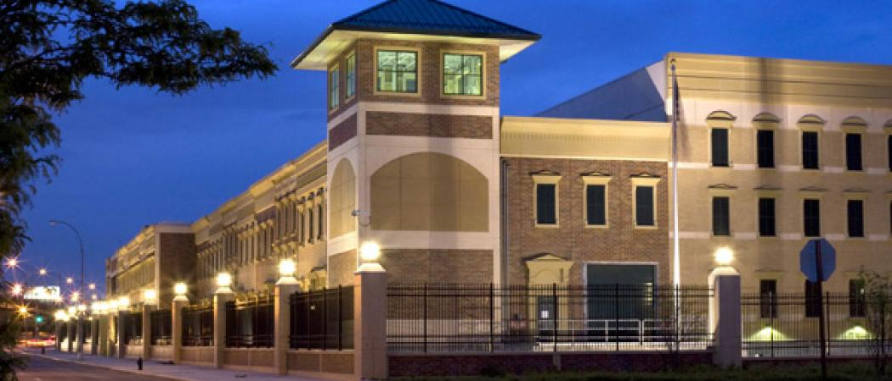
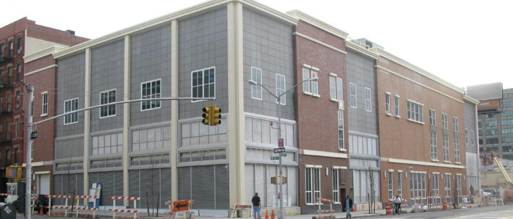
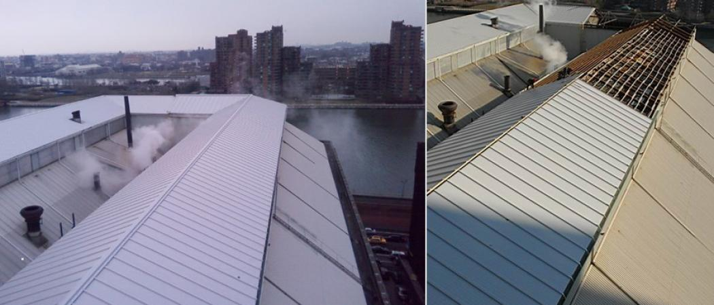

Heavy infrastructure
Power substations, generation plant modernization, utility facilities, and heavy construction.
Infrastructure, marine, restoration, and specialty construction across the region.
Tell us about the job
Our name is on the trucks.
It is also on every job we turn over.

01 · The company
Jerry, John, and Vincent D'Onofrio formed the company in Brooklyn in 1991. Before that, they worked around their father's concrete masonry business.
Today the crews handle infrastructure, marine construction, roofing, restoration, and specialty work across the region.
02 · Capabilities
Power substations, generation plant modernization, utility facilities, and heavy construction.
Marine and harbor structures backed by an owned fleet with barge-mounted cranes.
Building restoration, general construction, commercial facilities, and special projects.
Large commercial roof replacement, rehabilitation, Momentive systems, and construction sealants.
03 · Selected work

New York City · Marine

Bronx, NY · Infrastructure

New York, NY · Infrastructure

Long Island City, NY · Infrastructure

New York, NY · Roofing

New York City · General construction
04 · From the field
“[APPROVED CLIENT TESTIMONIAL]”
[CLIENT NAME] · [TITLE, ORGANIZATION]
05 · Start a conversation
Tell us what you are building, where it is, and what the site demands.
Get an estimate06 · Careers
D'Onofrio hires foremen, operators, laborers, and roofers across active projects. Send a resume or stop by the yard.
See open roles →